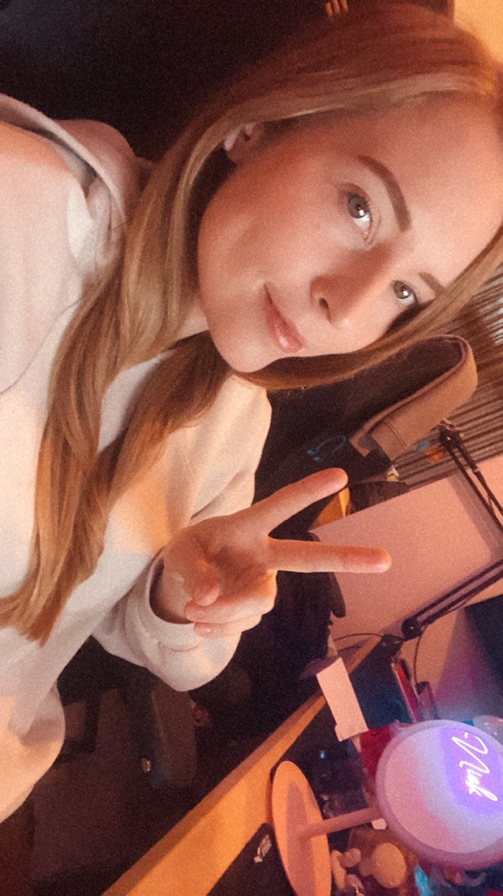

Nicole Schilder
Hallo!
Welkom op mijn portfolio! Mijn naam is Nicole en ik doe de studie Communication en Multimedia Design aan de HVA. Op deze pagina kan je een aantal projecten zien waar ik aan heb gewerkt.
Meer weten over mij? Klik dan hier
Herkomst
Ik ben geboren in Beverwijk. Heb bijna mijn hele leven gewoond in Velsen-Noord en woon momenteel samen met mijn vriend in Haarlem.
Hobbies
Ik heb best wel een aantal hobbies, namelijk; gamen, tekenen, gitaar spelen, koken, zingen, boulderen en overthinken
huisdieren
Ik heb twee huisdieren. Twee katten genaamd Teddy en Beertje.